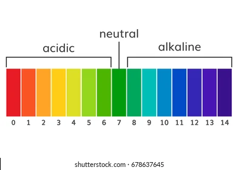

El Roble Acedemy
Chemistry Lab
By Abigahil Lozano
Introduction
In this chemestry experiment we discovered how to find the ph scale of many element just like yogurt, chloride, milk, ice tea etc.
Also showns if the product is sour, acid or basic, it have a scale of numbers to 0-14. 7 is the middle, it means something is neutral,
like water,less than 7 means something is acid just like a lemon and more than 7 means is a base, like soap. The pH scale helps us understand
if a substance is safe to touch, good to drink, or useful for cleaning. Scientists, farmers, and even people who take care of pools
use the pH scale all the time.

Hypothesis
If we test cleaning products like soap, baking soda,chloride, then they will have a pH higher than 7 because these
subtances feel slippery or are used for cleaning, and most cleaning products are bases.
So, they will be on the basic side of the pH scale. If a subtance has a low pH number (0-6) then it will be more acid,
if it has a high pH number (8-16) then it will me more basic.